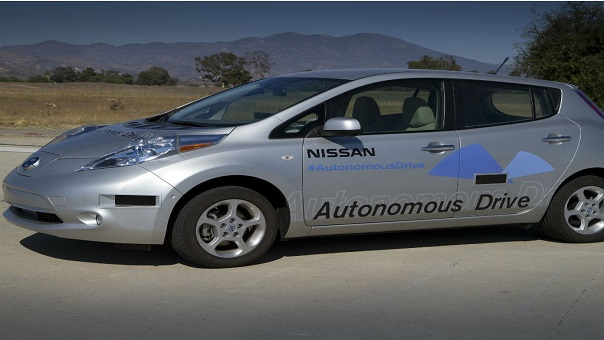

BEBÉS QUE NAZCAN ESTE AÑO NO MANEJARÍAN CARROS EN EL FUTURO

La industria automotriz está pasando por una transición gracias a la tecnología. Las grandes empresas de este sector, junto con otras de gran importancia, como por ejemplo Google, están cambiando la manera en la que conducimos los. La automatización de muchos productos está impactando el mundo y esto se evidencia con la creación de los primeros carros autónomos. Por tal razón, expertos aseguran que los bebes que nazcan en estos años no tendrán la necesidad de aprender a manejar, ya que habrán robots que lo hagan por ellos.
Henrik Christensen, director del Instituto de Robótica Contextual de la Universidad de California en San Diego, en entrevista con The San Diego Union Tribune, afirmó que ”todas las compañías de automóviles tendrán carros autónomos en las calles en 5 años”. Es por esta razón que Christensen se atrevió a decir que su propia predicción es que ”los niños que nazcan hoy jamás tendrán que manejar un carro”. Y no es descabellado empezar a pensar esto, pues según la revista Motor Trend, para el 2020 se habrán vendido más de 21 millones de carros autónomos solo en Estados Unidos, sin contar el resto del mundo.
Además, según el World Economic Forum, en lugares como Manhattan, New York (donde solo el 23% de las personas poseen carro), los niños no necesitarán aprender a conducir debido a que las opciones de transporte público son tan amplias que no hay apuro por adquirir un carro. Además, con la aparición de estos carros autónomos que brindan nuevos servicios para la gente se debilita más este apuro.
Empresas como Google ya incursionaron en este mercado al poner en marcha sus vehículos autónomos (con el proyecto que hoy llamamos Waymo). También Uber entró en esta nueva manera de movilidad al poner a rodar, en agosto del 2016, su primera flota de vehículos autónomos en Pittsburgh.
Aunque la automatización de los automóviles pueda tomar años, ya se ha evidenciado cómo esto puede afectar la vida de las generaciones futuras. Es por esta razón que poco a poco la tecnología irá cambiando los hábitos humanos.